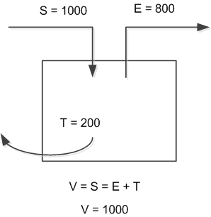
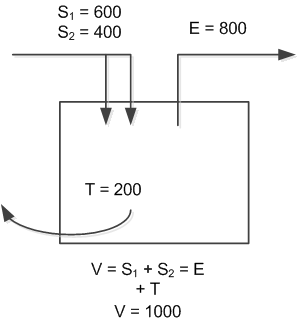
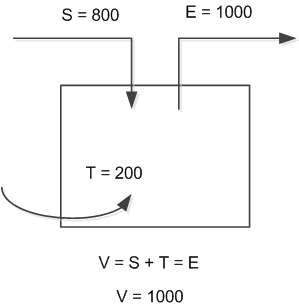
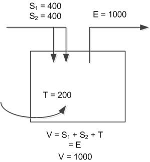

Ventilation for critical spaces
HVAC control professionals setting up a BACS in a lab must apply ventilation rates obtained from an authority responsible for health and safety issues. Aspects of rate determination and implementation include:
- Determine the required ventilation rate
- Calculate flow setpoints for each air terminal in the room
- Control air flow through the terminals to the required levels
- Monitor the ventilation process
The application directly supports several ways to determine the required ventilation rate.
| Constant ventilation | Setback ventilation with room mode | Local DCV | External DCV |
|---|---|---|---|---|
AF selection | Select CetVavVntCtl11 | Select CetVavVntCtl11 Set each min flow configuration value to required flow rate. In operation, supply flow setpoint may run slightly lower to account for transfer flow. See Pressurized room. | Select CetVavVntCtl12 Select sensor, install according to project specs (location is important) and enter setpoint. Set min and max flow rates. Configure MaxVentFlow (sum from supply terminals) or use max cooling value. When vent demand is 100 the room airflow rate is Max VentFlow. |
|
One segment (or 1 supply, even for multiple segments) | Set MaxVentFlow ≥ required flow rate.
| Set MaxVentFlow ≥ the highest required flow rate.
| Set max vent flow to the highest supply flow value needed for the room. |
|
Multiple segments | Determine how ventilation flow is to be divided among supply terminals, the relationship of MaxVentFlow values for separate terminals affects the distribution of flow. Set MaxVentFlow for each terminal. If the terminals are identical, set values equal. | Determine how ventilation flow is to be divided among supply terminals. In negative rooms transfer flow is part of ventilation. Set MaxVentFlow for each terminal. |
|
|
Notes | Raising the value of MaxVentFlow above the value needed does not change the physical flow rate delivered, the % value represented in application is affected. |
|
| Rapid Ventilation* (manually activated high ventilation) |
* Manually activated high ventilation rate (Rapid Ventilation): If a room is positively pressurized, the ventilation flow rate is the same as the supply flow. If a room is negatively pressurized, the ventilation flow rate is considered to include the supply flow plus transfer air. The controller sets the supply flow so that supply plus transfer satisfies the flow rate. As a result, the supply flow goes to a value slightly less than the configured max flow, to allow for transfer air. However, still enter the same max vent flow from the terminal.
Ventilation rates in pressurized spaces
Positive pressurization – the ventilation flow rate is the same as the supply flow. The application sets the extract flow so that the extract plus transfer flow satisfies the required ventilation rate.
 |  |
One supply, one extract. | Two supply, one extract. |
Negative pressurization – the ventilation flow rate is the same as the extract flow and includes transfer air. The application sets the supply flow so that supply plus transfer satisfies the required ventilation rate.
 |  |
One supply, one extract. | Two supply, one extract. |
The supply flow goes to a value slightly less than the configured max flow. Still enter the same max vent flow for the terminal. When configuring the supply terminal, ignore the fact that some of the ventilation will actually be transfer air.
Any values in the room application that relate to ventilation rates are set with this principle in mind. The minimum ventilation rates for the room (specific for each room op mode) refer to supply in a positive room and exhaust in a negative room. The monitoring values and ventilation alarms reflect supply rates in a positive room and exhaust rates in a negative room.
Monitoring Ventilation
Monitor ventilation levels and alarm points are described in:
Room pressurization VAV minimum ventilation (CetVavVntCtl11)
Room pressurization VAV minimum ventilation and demand-controlled ventilation DCV (CetVavVntCtl12)
Room pressurization VAV minimum ventilation and external demand-controlled ventilation DCV (CetVavVntCtl13)
Airflow control terminals measure flow. Airflow tracking collects measurements and calculates summaries; takes account of transfer air when calculating vent flow in physical units.
The ventilation AF calculates normalized flow levels and ventilation alarm state.